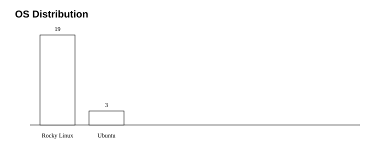
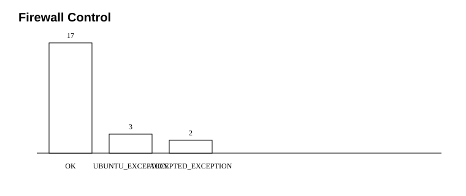
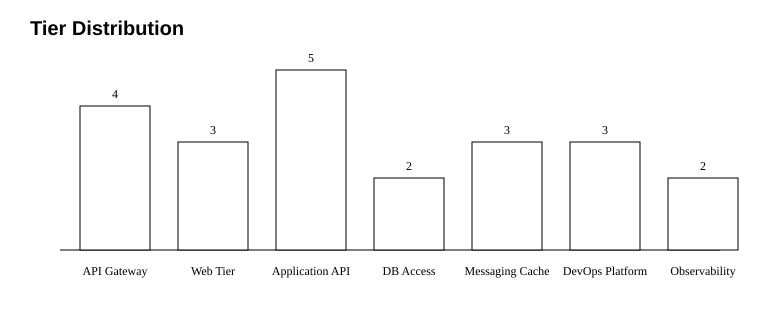

This repository contains synthetic data for training and demonstration purposes only. It does not contain real infrastructure data, secrets, IPs, domains, or production evidence.



| Host | Exception Type | Reason |
|---|---|---|
| af-gitlab-01 | FIREWALL_CONTROL_ACCEPTED_EXCEPTION | Docker-based GitLab service requires SOC-approved Docker/firewalld design before enabling host firewalld. |
| af-gitlab-runner-01 | FIREWALL_CONTROL_ACCEPTED_EXCEPTION | GitLab Runner Docker executor uses dynamic container networking and requires approved firewall model. |
| af-api-notification-legacy-01 | UBUNTU_OS_SCOPE_EXCEPTION | Legacy Ubuntu host included as migration exception in synthetic baseline. |
| af-log-legacy-01 | UBUNTU_OS_SCOPE_EXCEPTION | Legacy Ubuntu host included as migration exception in synthetic baseline. |
| af-web-legacy-01 | UBUNTU_OS_SCOPE_EXCEPTION | Legacy Ubuntu host included as migration exception in synthetic baseline. |